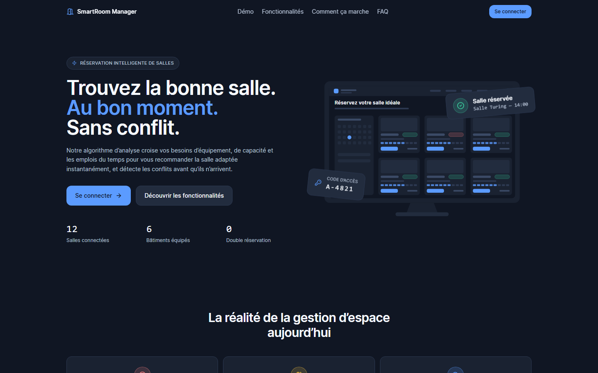
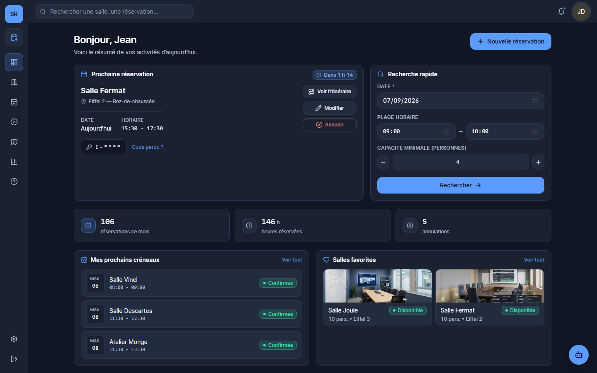
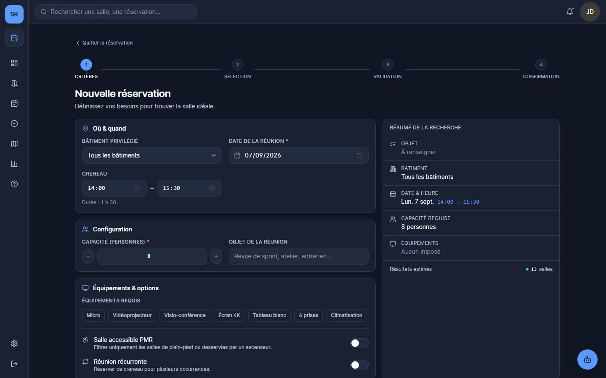
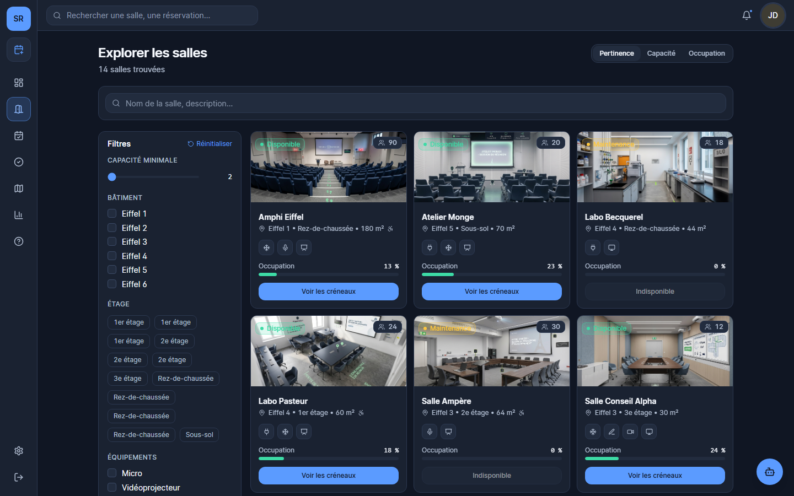
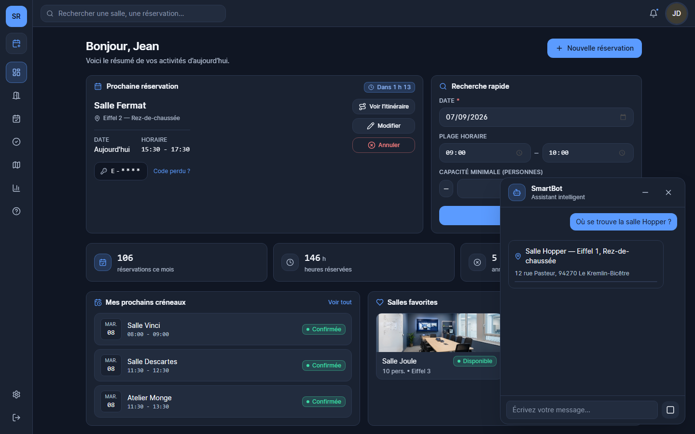
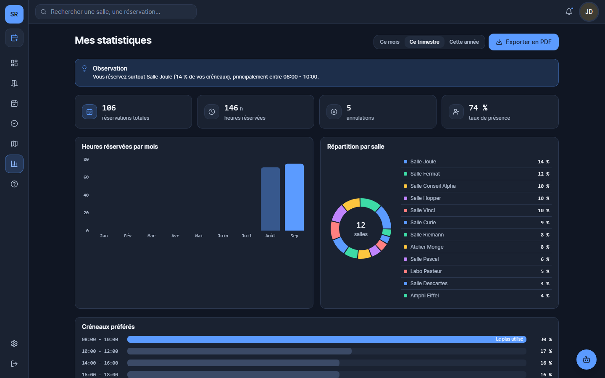
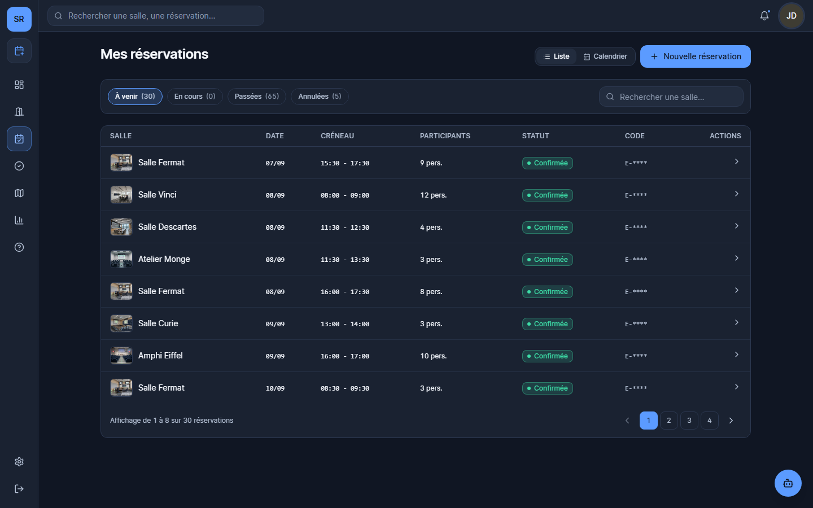
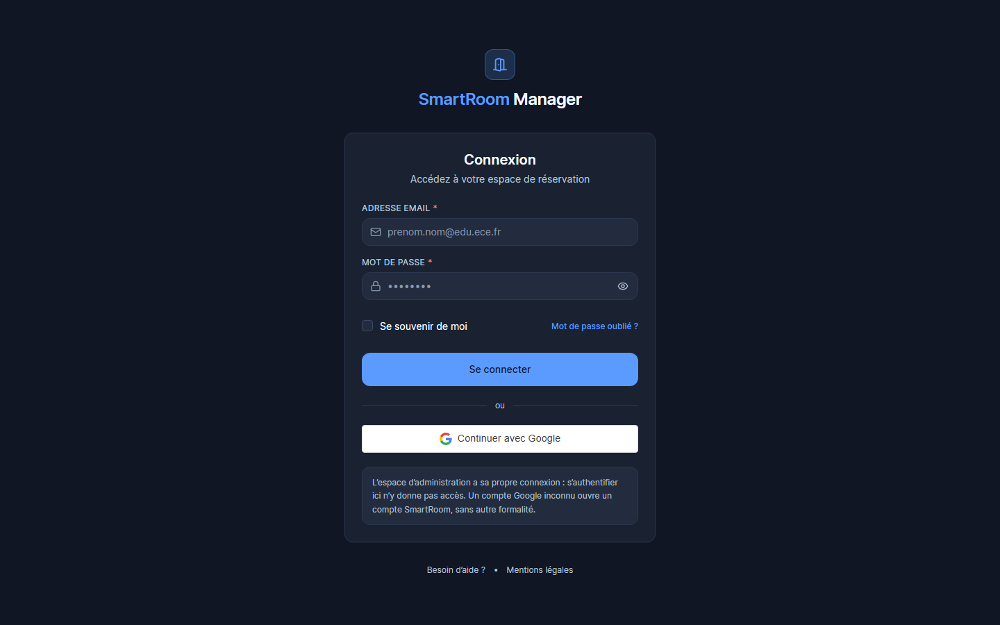

Plateforme de réservation intelligente de salles de campus : recherche assistée, garantie d’intégrité des créneaux et assistant conversationnel outillé.
| Membre du groupe | Adresse électronique |
|---|---|
| Dylan Menga Wanda | dylan.mengawanda@edu.ece.fr |
| Ngangne Takoudjou Angédarelle | angedarelle.ngangnetakoudjou@edu.ece.fr |
| Nguadjong Maeva | maevador.nguadjong@edu.ece.fr |
Sujet. SmartRoom Manager est une application web de réservation de salles pour un campus universitaire. Elle couvre la recherche d’une salle disponible, sa réservation, la validation de la présence sur place, l’arbitrage des conflits et l’administration complète du parc immobilier.
Problématique. Les moyens couramment employés pour réserver une salle — tableur partagé, courriel au secrétariat, affichage papier — ont un défaut commun : aucun ne peut garantir qu’une salle n’est pas déjà prise. Le conflit ne se découvre donc pas au moment de la réservation, mais devant la porte. À cela s’ajoute une perte invisible : des salles réservées puis désertées restent bloquées pour tous les autres.
Objectifs. Concevoir et réaliser une plateforme qui rende le double créneau structurellement impossible, qui aide l’utilisateur à trouver une salle adaptée plutôt qu’à filtrer une liste, et qui libère automatiquement les créneaux non honorés.
Solution proposée. Une architecture en quatre couches sur FastAPI et PostgreSQL, dans laquelle la garantie de non-chevauchement est portée par une contrainte d’exclusion de la base de données et non par du code applicatif. Une interface React couvrant 52 écrans, maquettée au préalable sur Figma. Deux briques relevant de la Data et de l’intelligence artificielle : un moteur de recommandation explicable, qui ordonne les salles selon un score dont chaque composante est exposée ; et un assistant conversationnel outillé de quatorze fonctions interrogeant la base réelle, adossé à une recherche documentaire hybride combinant similarité vectorielle et recherche lexicale, et encadré par trois garde-fous.
Principaux résultats. L’application est fonctionnelle et déployée publiquement. Elle comporte 128 routes d’API, 46 tables, 13 migrations versionnées, et elle est couverte par 1 576 tests automatisés dont la couche métier est éprouvée à 100 % de ses branches. Vingt-sept incidents ont été diagnostiqués et corrigés au cours du projet, chacun documenté avec la mesure qui a permis de l’établir. La solution atteint les trois objectifs initiaux ; ses limites, toutes liées aux paliers d’hébergement gratuits, sont documentées plutôt que masquées.
Topic. SmartRoom Manager is a web application for booking rooms across a university campus. It covers searching for an available room, booking it, validating on-site attendance, arbitrating conflicts, and fully administering the building portfolio.
Problem statement. The tools commonly used to book a room — a shared spreadsheet, an email to the front desk, a printed sheet on the door — share one flaw: none of them can guarantee that a room is not already taken. The conflict is therefore discovered not at booking time, but at the door. A second, less visible cost compounds it: rooms that are booked and then deserted stay blocked for everyone else.
Objectives. To design and build a platform that makes double-booking structurally impossible, that helps users find a suitable room rather than filter a list, and that automatically releases slots nobody shows up for.
Proposed solution. A four-layer architecture built on FastAPI and PostgreSQL, in which the non-overlap guarantee is enforced by a database exclusion constraint rather than by application code. A React front end covering 52 screens, prototyped beforehand in Figma. Two components rooted in Data and Artificial Intelligence: an explainable recommendation engine that ranks rooms by a composite score whose every component is exposed; and a tool-using conversational assistant with fourteen functions querying the live database, backed by hybrid document retrieval combining vector similarity with lexical search, and constrained by three safeguards.
Main results. The application is functional and publicly deployed. It exposes 128 API routes, 46 tables and 13 versioned migrations, and is covered by 1,576 automated tests, with the business-rule layer proven at 100 % branch coverage. Twenty-seven incidents were diagnosed and fixed during the project, each documented alongside the measurement that established it. The solution meets its three initial objectives; its limitations, all stemming from free hosting tiers, are documented rather than concealed.
Un campus universitaire dispose de salles de natures très diverses : amphithéâtres de quatre-vingt-dix places, laboratoires équipés, salles de réunion de quatre à douze personnes, ateliers. Elles sont réparties dans plusieurs bâtiments, parfois séparés de plusieurs rues.
Leur réservation repose le plus souvent sur trois mécanismes : un tableur partagé, un courriel adressé au secrétariat, ou une feuille affichée sur la porte. Le tableur autorise deux écritures simultanées sans arbitre. Le courriel dépend de la disponibilité d’une personne. Le papier n’est visible que de celui qui passe devant.
Ce contexte n’est pas une hypothèse d’école : il correspond à l’organisation que nous observons quotidiennement, et c’est cette familiarité avec le besoin qui a motivé le choix du sujet.
Trois raisons ont conduit notre groupe à retenir ce sujet plutôt qu’un autre.
Un besoin que nous connaissons de l’intérieur. Nous sommes les utilisateurs finaux du système que nous concevons. Cela nous a permis de valider les choix fonctionnels sans devoir mener une enquête préalable, et de repérer des besoins que l’analyse abstraite aurait manqués — la fenêtre de validation de présence, par exemple, est née d’un constat d’usage, non d’un cahier des charges.
Un problème dont la difficulté est réelle et technique. Empêcher deux réservations simultanées de se chevaucher paraît trivial ; c’est en réalité un problème classique de concurrence en base de données, dont la solution naïve — vérifier puis écrire — est fausse dès qu’il y a deux utilisateurs. Le sujet offrait donc une véritable difficulté d’ingénierie, et non un simple travail d’assemblage.
Une place naturelle pour la Data et l’IA. Notre formation est un Bachelor Data & IA ; il nous importait que ces disciplines portent des fonctionnalités réelles du produit, et non un habillage ajouté à la fin. Le moteur de recommandation et l’assistant conversationnel répondent tous deux à un besoin exprimé dans l’analyse : aider à choisir, et aider à s’orienter.
Comment concevoir un système de réservation de salles qui garantisse l’absence de double réservation quelles que soient les conditions de concurrence, qui assiste réellement l’utilisateur dans son choix plutôt que de lui déléguer le filtrage, et qui reste pleinement fonctionnel lorsque ses composants d’intelligence artificielle sont indisponibles ?
Cette formulation contient trois exigences que nous avons voulues indissociables. La première est une exigence de correction : le système ne doit pas seulement rendre le double créneau improbable, il doit le rendre impossible. La deuxième est une exigence d’utilité : afficher une liste de quinze salles n’aide personne, il faut ordonner et expliquer. La troisième est une exigence de robustesse, et c’est elle qui a le plus structuré l’architecture : une fonctionnalité d’IA qui tombe ne doit pas emporter l’application avec elle.
| Réf. | Objectif | Critère de réussite retenu |
|---|---|---|
| O1 | Rendre le double créneau impossible | Dix demandes simultanées sur le même créneau : exactement une réussit, les neuf autres reçoivent un message métier compréhensible. |
| O2 | Assister le choix d’une salle | Les salles proposées sont libres, conformes aux règles, ordonnées, et le classement est justifié à l’écran. |
| O3 | Libérer les créneaux non honorés | Sans validation de présence dans la fenêtre prévue, le créneau redevient réservable automatiquement. |
| O4 | Offrir une administration complète | Parc, règles, comptes, permissions, conflits, support et audit gérables sans intervention en base. |
| O5 | Fournir un assistant en langage naturel | L’assistant répond en s’appuyant sur la base réelle, et non sur ce qu’un modèle croit savoir. |
| O6 | Dégrader proprement | Sans modèle de langage, sans modèle de vecteurs et sans relais de courriel, l’application reste utilisable. |
| O7 | Déployer publiquement | L’application est accessible en ligne, supervisée, à coût nul. |
Nous avons travaillé en quatre temps : analyse et maquettage, réalisation du socle, réalisation des briques Data et IA, puis déploiement et fiabilisation. Le détail figure en section 5.
Une règle a gouverné l’ensemble, et particulièrement la seconde moitié du projet : mesurer avant d’affirmer. Plusieurs de nos diagnostics initiaux se sont révélés faux, et à chaque fois c’est une mesure — souvent qu’il a d’abord fallu rendre possible — qui a tranché. Cette discipline a une conséquence visible : nos messages de commit ne décrivent pas seulement ce qui change, mais ce qui a été observé, ce qui a été essayé puis abandonné, et ce qui prouve que la correction fonctionne.
Le présent rapport en rend compte de la même manière : chaque chiffre cité a été relevé sur l’application réelle, et l’annexe 12.2 donne les commandes qui permettent de le reproduire.
Nous avons décomposé la situation en trois problèmes distincts, parce qu’ils appellent trois réponses techniques différentes.
Chercher une salle oblige à ouvrir plusieurs sources et à les recouper mentalement. Le coût n’est pas le temps passé : c’est le renoncement. La personne réserve « au cas où », ce qui bloque un créneau dont elle ne se servira peut-être pas et aggrave la pénurie qu’elle subissait.
Sans arbitre technique, le conflit se découvre devant la porte. Le coût réel n’est pas la double écriture en base : c’est la réunion qui n’a pas lieu et les six personnes qui repartent.
Personne ne vient, et le créneau reste bloqué. C’est le problème le moins visible et le plus coûteux, précisément parce qu’il est invisible : la salle apparaît occupée dans le système et vide dans la réalité. Un système qui ne mesure pas la présence effective ne peut pas libérer ce qui ne sert pas.
| Acteur | Ce qu’il attend du système | Ce qui doit lui être interdit |
|---|---|---|
| Étudiant ou enseignant utilisateur principal | Trouver vite une salle adaptée, la réserver de façon sûre, y entrer, la modifier ou l’annuler, être prévenu | Voir les données d’autrui, modifier le parc, changer les règles |
| Administrateur gestionnaire de site | Gérer le parc, arbitrer les conflits, configurer les règles, traiter le support, exporter les données | Agir hors de son périmètre de permissions |
| Propriétaire responsable du service | Tout ce qui précède, plus la gestion des autres administrateurs et de leurs invitations | — |
| Établissement bénéficiaire indirect | Une meilleure occupation du parc, une traçabilité des décisions, des statistiques d’usage | — |
Une matrice de permissions où tout le monde possède tout ne prouve rien, et l’écran des rôles n’aurait rien à montrer. Nous avons donc défini sept permissions nommées, attribuables individuellement, et le jeu de démonstration porte cinq comptes d’administration aux périmètres volontairement différents. Le cloisonnement devient ainsi démontrable, et non seulement déclaré.
Nous avons formalisé dix cas d’usage, qui ont servi de référence tout au long de la réalisation.
| Réf. | Cas d’usage | Règles associées |
|---|---|---|
| U1 | Réserver une salle | Ne proposer que des salles libres et conformes ; confirmation par courriel ; code d’accès émis une heure avant. |
| U2 | Valider sa présence | Saisie du code à l’ouverture du créneau, dans une fenêtre de dix minutes ; au-delà, libération automatique. |
| U3 | Modifier ou annuler | Jusqu’à une heure avant, délai configurable par salle ; motif obligatoire ; participants prévenus. |
| U4 | Demander un accès | Certaines salles exigent un badge : demande motivée, arbitrage tracé. |
| U5 | Arbitrer un conflit | Référence lisible et prononçable (#CONF-8492), décision journalisée. |
| U6 | Configurer les règles | Durées, battement, préavis, horizon, quota hebdomadaire, délais ; portée établissement, bâtiment ou salle. |
| U7 | Interroger l’assistant | En langage naturel : réservations, disponibilité, localisation, procédure, ouverture d’un ticket. |
| U8 | Administrer le parc | Bâtiments, étages, plans, salles, photos, repères, équipements, statuts. |
| U9 | Suivre l’occupation | Tableaux de bord, heures de pointe, taux par salle, exports. |
| U10 | Gérer les comptes | Suspension et réactivation motivées et notifiées, retrait définitif par anonymisation. |
| Contrainte | Conséquence directe sur la conception |
|---|---|
| Budget nul | L’hébergement devait tenir sur des paliers gratuits. Cette contrainte n’a pas été subie mais intégrée : elle a produit l’architecture à trois étages de l’assistant, la stratégie de versionnement des médias, et la dégradation propre décrite en 6.7. |
| Groupe de trois, sans encadrement technique | Choix d’outils à faible coût d’exploitation, et mise en place d’une chaîne d’intégration continue exigeante qui joue le rôle du relecteur : elle a détecté trois défauts qu’une relecture humaine aurait pu laisser passer. |
| Aucun GPU en production | Aucun hébergement gratuit ne fait tourner un modèle de sept milliards de paramètres. L’assistant devait donc fonctionner sans modèle local, ce qui a imposé une architecture où le modèle est un confort et non une dépendance. |
| Durée limitée | Certaines fonctionnalités ont été écartées explicitement plutôt que livrées à moitié (exports PDF et Excel, stockage objet externe). Ces arbitrages sont documentés en 10.3. |
| Données personnelles | L’application manipule des identités et des historiques. Elle devait donc prévoir le retrait d’un compte, le cloisonnement des données et la traçabilité des décisions. |
Nous avons examiné les solutions existantes pour situer notre travail et éviter de réinventer ce qui fonctionne.
| Solution | Ce qu’elle fait bien | Ce qui manque pour notre besoin |
|---|---|---|
| Tableur partagé (Google Sheets, Excel en ligne) | Gratuit, immédiat, connu de tous | Aucune garantie d’intégrité, aucun contrôle d’accès fin, aucune notion de règle métier, aucune trace exploitable |
| Agendas de ressources (Google Calendar, Outlook) | Réservation de ressources, invitations, rappels | Le double créneau reste possible selon la configuration ; aucune recommandation ; aucune validation de présence ; pas de libération automatique |
| Solutions dédiées du marché (Skedda, Robin, Joan) | Fonctionnellement très complètes, matures | Payantes, fermées, non adaptables au règlement d’un établissement, et sans accès au code — donc sans valeur pédagogique pour ce projet |
| Projets libres (Booked, Libcal-like) | Code disponible, socle éprouvé | Ergonomie datée, pas de couche d’assistance, architecture souvent monolithique difficile à faire évoluer |
Deux enseignements concrets. D’abord, aucune des solutions gratuites examinées ne place la garantie d’intégrité dans la base de données : toutes la traitent au niveau applicatif, donc contournable. Nous en avons fait notre choix structurant. Ensuite, aucune ne mesure la présence effective ; le problème C reste entier partout. C’est donc là que notre apport pouvait être réel, et nous y avons consacré un cas d’usage complet plutôt qu’une fonctionnalité annexe.
| Exigence | Traduction technique retenue |
|---|---|
| Intégrité | Contrainte EXCLUDE USING gist : le chevauchement n’est pas représentable. |
| Confidentialité | Portées de session distinctes, permissions granulaires, en-têtes de cache stricts sur toute route personnelle. |
| Traçabilité | Journal d’audit métier, journal par tour d’assistant, journaux applicatifs structurés. |
| Robustesse | Dégradations prévues et testées. |
| Testabilité | Couche métier pure, sans dépendance, exigée à 100 % de couverture de branches. |
| Accessibilité | Libellés visibles et lisibles par lecteur d’écran ; conformité WCAG 2.5.3 sur les déclencheurs. |
Nous avons adopté une méthode itérative par incréments fonctionnels, proche de l’esprit agile mais adaptée à un groupe de trois sans client externe : chaque itération devait produire une fonctionnalité utilisable de bout en bout — de l’écran jusqu’à la base — plutôt qu’une couche technique isolée.
Ce choix répondait à un risque précis. En découpant par couches, on obtient très tard quelque chose qui marche, et les erreurs d’interface entre couches ne se découvrent qu’à l’assemblage. En découpant par fonctionnalités, chaque itération traverse toute l’architecture et vérifie ces interfaces immédiatement.
Règle 1 — Mesurer avant d’affirmer. Aucun diagnostic n’est retenu sans une observation qui l’établit. Cette règle nous a coûté du temps sur le moment et nous en a fait gagner beaucoup : plusieurs de nos hypothèses initiales étaient fausses (section 8).
Règle 2 — Un test qui ne peut pas échouer ne prouve rien. Chaque correction d’importance est accompagnée d’une contre-épreuve : on vérifie que le test échoue bien lorsqu’on retire le correctif. Cette pratique a, à elle seule, invalidé un correctif que nous pensions bon (section 7.1).
Le travail a été réparti par domaines de responsabilité, chaque membre restant garant de son périmètre — conception, réalisation et tests — tout en participant aux revues croisées.
| Membre | Périmètre principal |
|---|---|
| Dylan Menga Wanda | Architecture back-end et modèle de données ; contrainte d’intégrité et gestion de la concurrence ; assistant conversationnel et recherche hybride ; déploiement et supervision |
| Ngangne Takoudjou Angédarelle | Maquettage Figma et système de design ; réalisation du front-end React ; tunnel de réservation et espaces d’administration ; tests d’interface |
| Nguadjong Maeva | Analyse du besoin et cas d’usage ; règles métier et moteur de recommandation ; stratégie de tests et recette fonctionnelle ; documentation et jeu de démonstration |
Cette répartition doit être relue et corrigée par le groupe pour correspondre exactement à la réalité du travail effectué. Les consignes exigent un rapport personnel : chaque membre doit pouvoir justifier son périmètre à l’oral.
| Phase | Contenu | Livrable de fin de phase |
|---|---|---|
| 1 | Analyse, cas d’usage, étude de l’existant | Dix cas d’usage formalisés, exigences fonctionnelles et non fonctionnelles arrêtées |
| 2 | Maquettage Figma et système de design | 20 écrans maquettés, jetons de couleur et composants récurrents définis |
| 3 | Socle : schéma, migrations, authentification, parc | Base migrée, sessions séparées utilisateur / administration, parc administrable |
| 4 | Cœur métier : règles, réservation, concurrence | Contrainte d’exclusion en place, verrou consultatif, tests de concurrence verts |
| 5 | Parcours utilisateur complet | Tunnel en quatre étapes, code d’accès, validation de présence, libération automatique |
| 6 | Briques Data & IA | Moteur de recommandation explicable, assistant outillé, recherche hybride, garde-fous |
| 7 | Qualité : tests, intégration continue | Cinq travaux de CI, seuils de couverture imposés, 1 576 tests |
| 8 | Déploiement et fiabilisation | Application en ligne, supervision, 27 incidents traités |
| 9 | Documentation et rapport | README, documentation OpenAPI, présent rapport |
| Outil | Usage dans le projet |
|---|---|
| Figma | Maquettage des 20 écrans, définition du système de design |
| Git et GitHub | Versionnement, historique documenté, hébergement du dépôt |
| GitHub Actions | Intégration continue : cinq travaux, seuils de couverture, contrôle du schéma |
| Docker et Docker Compose | Pile de développement reproductible, image de production |
| PyCharm et VS Code | Développement back-end et front-end |
| Ruff | Analyse statique et formatage du code Python |
| pytest, Vitest, Playwright | Tests unitaires, d’intégration, d’interface et de bout en bout |
| Mailpit | Boîte de courriel locale : rien ne sort de la machine en développement |
Les consignes demandent de justifier nos choix ; nous indiquons donc systématiquement l’alternative écartée et la raison.
| Choix | Alternative écartée | Raison du choix |
|---|---|---|
| PostgreSQL | MySQL, SQLite | Seul à offrir EXCLUDE USING gist sur des intervalles. La garantie d’intégrité devient native au lieu d’être applicative : c’est le choix structurant du projet. |
| pgvector | Pinecone, Qdrant, Chroma | Une seule base à exploiter, sauvegarder, migrer et déployer. Pour un groupe de trois, la simplicité d’exploitation prime sur la performance de pointe. |
| FastAPI | Django, Flask | Validation par annotations de type, documentation OpenAPI générée gratuitement, et asynchrone natif — nécessaire au flux d’événements de l’assistant. |
| SQLAlchemy 2 + psycopg3 | ORM de Django | Accès aux types PostgreSQL avancés : tstzrange, vector, contraintes d’exclusion. |
| Alembic | create_all au démarrage | Une migration se relit, se rejoue, se corrige et se raconte. Un create_all ne laisse aucune trace de l’évolution du schéma. |
| React + Vite | Next.js | Aucun besoin de rendu serveur ; un binaire statique se déploie sur n’importe quel hébergeur, y compris gratuit. |
| Tailwind CSS | CSS modules, styled-components | Le système de design vit dans des jetons, pas dans des feuilles éparses qui divergent avec le temps. |
| Server-Sent Events | WebSocket | Le flux de l’assistant est unidirectionnel ; SSE traverse les proxys sans configuration, ce que nous avons vérifié au déploiement. |
| Ollama en local | API distante uniquement | Développement hors ligne, sans coût, et sans qu’aucune donnée ne quitte le poste. |
Nous n’avions pas de relecteur extérieur ; nous avons donc confié ce rôle à l’outillage. La chaîne d’intégration continue exécute, à chaque poussée, cinq travaux de tests avec des seuils de couverture imposés, l’analyse statique ruff check, le contrôle de formatage ruff format --check, et alembic check, qui vérifie que le schéma décrit par les modèles correspond bien aux migrations.
Ce dernier contrôle mérite d’être signalé : c’est lui qui a détecté un écart de nommage de contrainte qu’aucun test fonctionnel n’aurait révélé, et qui aurait produit une divergence silencieuse entre notre base locale et la base de production.
Conformément aux consignes, cette section privilégie l’explication de l’architecture, des choix et des mécanismes ; les extraits de code sont limités à ce qui est nécessaire à la compréhension. Le code complet est disponible dans le dépôt GitHub indiqué en annexe 12.1.
Chaque couche ne connaît que la suivante, jamais la précédente.
| Couche | Responsabilité | Interdit |
|---|---|---|
app/api | Routage, validation d’entrée, sérialisation, dépendances d’authentification, en-têtes de cache | Toute règle métier |
app/services | Orchestration : lire, appliquer les règles, écrire, journaliser, programmer les notifications (17 services) | Connaître HTTP |
app/domain | Cœur métier pur : créneaux libres, application des règles, détection de conflits, pondération des recommandations | Importer SQLAlchemy ou FastAPI |
app/models | Cartographie SQLAlchemy, et rien d’autre | Contenir de la logique |
C’est la pureté de app/domain qui nous permet d’en exiger 100 % de couverture de branches sans monter la moindre base de données : ses tests s’exécutent en millisecondes et ne demandent aucun environnement. Le bénéfice s’est vérifié à l’usage — un défaut de pondération se corrige dans le domaine, avec un test instantané, sans toucher au reste.
Quarante-six tables réparties en sept domaines, et treize migrations versionnées.
| Domaine | Tables principales |
|---|---|
| Parc | buildings, floors, floor_plans, rooms, room_photos, equipments, room_placements |
| Réservations | bookings, booking_participants, booking_series, booking_access_codes, conflicts |
| Règles | booking_rules, opening_hours, closures |
| Comptes | users, admin_accounts, admin_permissions, permissions, refresh_tokens |
| Support | faq_articles, faq_fragments, tickets, chatbot_intents |
| Assistant | chat_conversations, chat_messages, chat_tours |
| Traçabilité | audit_logs |
Stratégie de migration. Nous nous sommes imposé deux règles. Une migration déjà appliquée ne se réécrit jamais : elle se corrige par la suivante — la migration 0011 n’existe que pour renommer une contrainte que la 0010 avait mal nommée, et réécrire la 0010 aurait cassé toutes les bases où elle était déjà passée. Par ailleurs, tout gabarit fonctionnel est posé par migration et non seulement par le jeu de démonstration, parce que la fonction de notification ignore silencieusement un code de gabarit absent : une fonctionnalité livrée sans son gabarit n’aurait rien fait, sans la moindre erreur pour le signaler.
C’est la réponse à l’objectif O1, et le cœur technique du projet.
ALTER TABLE bookings ADD CONSTRAINT ex_bookings_no_overlap
EXCLUDE USING gist (
room_id WITH =,
tstzrange(start_at, end_at, '[)') WITH &&
) WHERE (status <> 'annulee');
Cette contrainte rend impossible l’enregistrement de deux réservations qui se chevauchent dans la même salle. Pas improbable : impossible — quelle que soit la concurrence, quel que soit le chemin d’écriture, y compris une insertion faite à la main en SQL.
Deux détails de conception méritent explication. Les bornes '[)' — début inclus, fin exclue — permettent à une réservation de 9 h à 10 h et à une autre de 10 h à 11 h de coexister, ce qu’attend l’intuition ; avec '[]', elles se chevaucheraient à 10 h précises. La clause WHERE (status <> 'annulee') exclut les réservations annulées : une annulation doit libérer le créneau sans effacer la trace.
Dix demandes simultanées sur le même créneau concluent toutes que la salle est libre, puis s’affrontent sur la contrainte. PostgreSQL arbitre, mais au-delà de deux ou trois concurrents il détecte un cycle d’attente et sacrifie une transaction :
psycopg.errors.DeadlockDetected
CONTEXT: while checking exclusion constraint on tuple (0,119)
in relation "bookings"
Notre service ne traduisait que le code 23P01 (violation d’exclusion) ; le 40P01 (interblocage) remontait tel quel, et l’utilisateur recevait une erreur technique là où il devait lire que le créneau venait d’être pris. La correction :
SELECT pg_advisory_xact_lock(hashtext('salle:' || :room_id));
-- puis seulement : verification de disponibilite, puis insertion
Le verrou est pris avant la vérification, et non juste avant l’insertion : c’est la séquence entière lire-puis-écrire qui doit être indivisible. Il est porté par la transaction, donc relâché aussi bien au COMMIT qu’au ROLLBACK.
La clé du verrou porte sur la salle, non sur le créneau. La contrainte parle de chevauchement, pas d’égalité : une clé par créneau laisserait passer de front 9 h–11 h et 10 h–12 h, qui ont des clés différentes mais se recouvrent. La seule chose que deux réservations conflictuelles ont en commun est la salle.
| Mécanisme | Réglage | Justification |
|---|---|---|
| Jeton d’accès (JWT) | 15 minutes | Court par choix : un jeton volé a une durée de nuisance bornée. |
| Jeton de rafraîchissement | Cookie httpOnly, 30 jours, chemin restreint | Inaccessible au JavaScript ; le chemin limite sa diffusion aux seules requêtes qui en ont besoin. |
| Rotation | À chaque usage | Le jeton précédent est révoqué immédiatement. |
| Détection de rejeu | Révocation de la famille | Rejouer un jeton déjà tourné fait tomber toute la session : comportement attendu face à un vol. |
| Limitation de débit | 5 connexions/min | Freine le bourrage d’identifiants sans gêner l’usage normal. |
Deux portes distinctes. /auth/login ouvre une session de portée utilisateur, /auth/admin/login une session d’administration. Un compte administrateur connecté par la porte des utilisateurs n’obtient aucun privilège — vérification menée en production et rapportée en 7.4.
Trois tâches périodiques portent les automatismes du produit, dont la libération des créneaux non honorés (objectif O3).
| Tâche | Période | Rôle |
|---|---|---|
| Libération, clôture et rappels | 5 minutes | Libère les créneaux sans présence validée, clôt les réservations passées, envoie les rappels |
| Rafraîchissement des agrégats | 15 minutes | Recalcule la vue matérialisée d’occupation |
| Purge des jetons expirés | quotidienne | Supprime les jetons de session et de réinitialisation périmés |
Chaque événement métier produit une notification applicative et un courriel, tous deux rendus depuis un gabarit stocké en base et modifiable depuis l’administration, sans redéploiement. Le courriel ne suit qu’un changement réel d’état : réappliquer un statut déjà porté n’apprend rien à personne.
Première brique Data du projet, il répond à l’objectif O2. Il ordonne les salles compatibles selon un score composite dont chaque composante est calculée séparément et exposée, de sorte que l’interface puisse justifier le classement.
| Composante | Ce qu’elle capture |
|---|---|
| Adéquation de capacité | Une salle de 90 places pour 4 personnes est un gâchis ; une salle de 4 places pour 4 personnes est juste. L’écart est pénalisé dans les deux sens. |
| Équipements | Présence des équipements explicitement demandés. |
| Proximité | Bâtiment habituel de la personne, renseigné à l’inscription — d’où l’écran d’accueil qui le demande. |
| Accessibilité | Conformité PMR lorsqu’elle est requise. |
| Occupation | Taux d’occupation de la salle, pour répartir l’usage plutôt que saturer toujours les mêmes. |
Le calcul vit dans app/domain/recommendation.py, sans aucune dépendance externe, et est couvert à 100 % de ses branches. L’explicabilité n’est pas un supplément d’âme : c’est ce qui rend la recommandation acceptable par un utilisateur qui, sans justification, se contenterait de reprendre la salle qu’il connaît.
L’ensemble des écrans a été maquetté sur Figma avant toute ligne de code. Ce choix a servi trois usages, dont deux n’ont rien à voir avec l’apparence.
Figer le vocabulaire. Les maquettes ont imposé un vocabulaire unique avant l’implémentation — créneau, battement, préavis, horizon, repère, plan d’étage. Sans cette étape, un même objet aurait porté trois noms entre l’interface, l’API et la base, comme cela arrive lorsque l’écran est dessiné après le schéma.
Révéler les trous fonctionnels. Deux besoins ont été découverts en dessinant, et non en analysant. L’écran de validation de présence a fait apparaître qu’une validation sans borne temporelle n’a pas de sens : si l’on peut valider à tout moment, la libération automatique devient impossible — d’où la fenêtre de dix minutes, absente de l’analyse initiale. L’écran d’arbitrage a fait apparaître le besoin d’une référence prononçable : un identifiant UUID ne se lit pas à voix haute dans un couloir, #CONF-8492 si.
Fixer le système de design. Vingt écrans maquettés ont produit 52 écrans React et 152 composants. Le produit est en thème sombre — choix assumé pour un outil consulté plusieurs fois par jour, souvent dans des salles peu éclairées et sur mobile.


E-****), les compteurs personnels, les créneaux à venir et les salles favorites.Quatre étapes, dans un ordre discuté au maquettage : le besoin (date, plage, effectif, équipements — aucune salle n’est encore affichée), la salle (uniquement celles qui sont libres et conformes, ordonnées par score avec son explication), le créneau, puis la confirmation.
Montrer les salles avant d’avoir recueilli le besoin obligerait l’utilisateur à filtrer lui-même une liste dont la plupart des entrées lui sont inutiles. L’ordre retenu fait porter ce travail au système, ce qui est exactement l’objet du produit.


Le dossier src/api/ est le seul à connaître l’existence du réseau : aucun composant n’appelle fetch directement. Il porte aussi les adaptateurs qui traduisent les charges utiles de l’API — nommées en snake_case — vers les objets attendus par l’interface. Cette frontière nous a permis à plusieurs reprises d’ajouter un champ côté serveur sans toucher au moindre écran.
Seconde brique Data & IA, elle répond aux objectifs O5 et O6.
L’assistant répond en s’appuyant sur des outils qui interrogent la vraie base — jamais sur ce qu’un modèle croit savoir. Quatorze outils sont enregistrés ; la liste complète figure en annexe 12.5. Les outils d’écriture ne s’exécutent jamais directement : ils produisent un brouillon conservé côté serveur sous un jeton à usage unique, que l’utilisateur doit confirmer. Au moment de l’exécution, la sortie du modèle n’est jamais relue : c’est le brouillon validé qui part au service métier. Un modèle qui aurait changé d’avis entre les deux tours ne peut donc rien écrire.
| Étage | Où | Rôle |
|---|---|---|
| A — Ollama | Poste de développement | Gratuit, hors ligne, aucune donnée ne sort du poste. |
| B — API distante | Production | N’existe que parce qu’aucun hébergement gratuit ne fait tourner un modèle de sept milliards de paramètres. |
| C — Moteur déterministe | Toujours disponible | Ce n’est pas une panne : un moteur de repli qui reconnaît des intentions déclarées en base, appelle les mêmes outils, et répond sans aucun modèle. |
Sur cinq essais identiques de « donne-moi mes prochaines réservations », pour un compte qui en possède cinq :
| Moteur | Appelle l’outil | Réponse |
|---|---|---|
| qwen2.5:7b | 3 fois sur 5 | variable |
| qwen2.5:14b | 0 fois sur 3 | fausse |
| Moteur déterministe | 2 fois sur 2 | juste |
Quand le modèle n’appelle rien, il écrit une phrase plausible — parfois « je n’ai pas trouvé » — devant un agenda plein. L’utilisateur ne peut pas distinguer cette réponse d’une vraie. Nous en avons conclu qu’une question fermée dont la réponse est une liste n’a rien à gagner d’un modèle de langage et tout à perdre : elle part désormais au moteur déterministe, et le journal la distingue par un déclencheur propre pour qu’elle ne soit pas comptée comme une panne.
La base de connaissances est découpée en fragments vectorisés, stockés dans une colonne vector(768) indexée en HNSW avec l’opérateur cosinus. La recherche additionne deux volets, parce qu’ils échouent différemment : le vectoriel retrouve « je n’arrive pas à entrer dans la salle » sous l’article « Code d’accès » sans partager un seul mot, mais rate un identifiant ou un nom propre ; le lexical trouve le mot exact et rien d’autre.
La fusion se fait par rangs réciproques (RRF) plutôt que par somme de scores : une similarité cosinus et un ts_rank ne vivent pas sur la même échelle, et les additionner reviendrait à comparer des degrés et des kilomètres. Les rangs, eux, sont comparables par construction.
| Question posée | Lexical seul | Recherche hybride |
|---|---|---|
| « comment je préviens que je suis arrivé » | aucun résultat | Valider ma présence sur place |
| « ma réunion est annulée que faire » | À quoi sert SmartRoom | Modifier l’horaire ou la salle |
| « je n’arrive pas à entrer dans la salle » | À quoi sert SmartRoom | Valider ma présence sur place |
La première question ne partage aucun mot avec l’article qui y répond : c’est exactement ce que le volet lexical ne peut pas faire.
| Garde-fou | Ce qu’il empêche |
|---|---|
| Injection | Les délimiteurs sont neutralisés et les motifs suspects comptés : une consigne cachée dans une question ne devient pas une instruction. |
| Étayage | La réponse est confrontée aux données réellement obtenues ; si elle avance ce qui n’y figure pas, une réserve est ajoutée. C’est ce garde-fou qui fait dire « je n’ai pas trouvé cette information » plutôt que d’inventer un chiffre. |
| Anonymisation | Avant tout envoi à un fournisseur distant, adresses, noms et téléphones sont remplacés par des jetons stables le temps de la conversation ; la table de correspondance ne quitte jamais le serveur. |
Cloisonnement. Sept permissions nommées, attribuées individuellement ; sessions séparées ; en-têtes de cache stricts sur toute route personnelle. Ce dernier point a fait l’objet d’une correction importante détaillée en 8.1.
Retrait d’un compte par anonymisation. Effacer la ligne casserait le journal d’audit, les frises de réservation et les agrégats. Or ce que le règlement demande n’est pas la disparition de l’historique, mais celle de l’identité. Nous effaçons donc l’identité — adresse, nom, prénom, téléphone, promotion, badge, photo, mot de passe — et conservons les réservations passées sans nom, les agrégats et les entrées d’audit. L’adresse devient compte-retire-<12 caractères>@anonyme.invalid : le domaine .invalid est réservé par la RFC 2606, donc aucune remise n’est possible et aucun envoi accidentel n’atteindra une boîte réelle.
Gestion des secrets. Aucun secret n’est versionné. Un fichier .env avait été committé aux premiers temps du projet ; il a été retiré de tout l’historique, et tous les identifiants concernés ont été régénérés — car la réécriture retire la trace, elle n’annule pas l’exposition.
| Composant | Service | Rôle |
|---|---|---|
| Base de données | Neon | PostgreSQL managé avec pgvector, palier gratuit |
| API | Render | Image Docker construite depuis le dépôt, palier gratuit |
| Front | Vercel | Statique et réécritures, palier gratuit |
| Supervision | UptimeRobot | Sonde toutes les 5 minutes |
Le front devant l’API. Deux réécritures font que le navigateur appelle l’API sur l’origine qui lui a servi la page. La requête part en même origine : aucun préflight CORS n’est nécessaire, et le cookie de rafraîchissement reste attaché, ce qu’un appel direct vers le domaine de l’API lui interdirait. Une troisième réécriture renvoie toute autre adresse vers index.html, sans quoi un rechargement sur /app/salles rendrait un 404.
Migrations au démarrage. L’image applique alembic upgrade head à chaque démarrage. La commande est idempotente : sur une base déjà migrée, elle ne fait rien. Cela évite l’étape manuelle qu’on oublie.
| Niveau | Ce qu’il éprouve | Dépendances |
|---|---|---|
| Domaine | Les règles métier, en isolation totale | Aucune |
| Services et API | L’intégration réelle : contrainte d’exclusion, JWT, transactions | PostgreSQL |
| Assistant | La boucle d’agent, les outils, les garde-fous, les bascules | Base + fournisseur simulé |
| Front | Les écrans et leur logique | MSW intercepte le réseau |
| Bout en bout | Les parcours complets dans un vrai navigateur | Pile complète |
Chaque correctif d’importance est accompagné d’une vérification que le test échoue bien sans lui. Plusieurs de nos messages de commit en portent la trace : « sans le correctif, la trace porte deux cartes au lieu d’une », « contre-épreuve sans le relevé : zéro plan ».
Un test censé prouver une correction passait aussi sans elle. Le motif de remplacement n’avait rien changé : le formateur automatique avait replié l’expression sur trois lignes, et la chaîne recherchée n’existait plus telle quelle. Sans contre-épreuve, le correctif aurait été livré comme vérifié alors qu’il n’était pas appliqué.
| Suite | Tests | Couverture | Fichiers |
|---|---|---|---|
| Back-end complet | 1 102 | — | 46 |
| · dont Domaine | — | 100 % des branches (seuil imposé) | — |
| · dont Services et API | 545 | 87,59 % | — |
| · dont Assistant | 159 | 84,71 % | — |
| Front-end | 474 | 90,25 % | 46 |
| Bout en bout | 3 parcours | — | 3 |
Relevés sur la pile complète le jour de la rédaction ; tous verts. Les commandes de reproduction figurent en annexe 12.2.
Un module du domaine à 0 %. app/domain/organisation.py n’était éprouvé que depuis les tests de services, où le travail « Domaine » ne regarde pas. Le seuil de 100 % a échoué et nous a appris qu’un module du domaine se prouve dans le domaine.
Une exclusion inopérante. Un test d’anonymisation a montré qu’une exclusion écrite en rétrospection ne servait à rien : la correspondance commençait sur le mot exclu.
Une contradiction entre deux tests. Le parcours de bout en bout cherchait un bouton « Ouvrir la navigation » quand le test unitaire cherchait « Menu », et tous deux passaient sur leur propre périmètre. Lui donner un aria-label différent du texte visible aurait violé WCAG 2.5.3 ; c’est donc le test de bout en bout qui a suivi l’implémentation.
La suite lance dix demandes simultanées sur le même créneau. Résultat : exactement une réussit, et les neuf autres reçoivent une erreur applicative traduite en message métier compréhensible. Le fichier s’exécute en 14 secondes contre 6 auparavant — la sérialisation introduite par le verrou consultatif fait précisément son office. Critère de réussite atteint.

localiser_salle et rend une carte construite depuis la base : bâtiment, étage et adresse postale. Le journal du tour associé porte repli: false, ce qui atteste que la réponse vient bien du modèle outillé et non du moteur de secours.

Nous avons voulu que les résultats ne soient pas seulement vrais en local. Les vérifications suivantes ont été menées sur l’application déployée.
| Vérification | Résultat |
|---|---|
| 23 routes d’administration en lecture, avec une session d’administration | 200 sur les 23 |
| Les mêmes routes, avec une session utilisateur | 403 sur 22 d’entre elles |
| Routes utilisateur (profil, salles, bâtiments, réservations, notifications, statistiques, export, FAQ, tickets, horaires, fermetures, conversations) | 200 |
| Parcours public rejoué par Playwright contre la production | 4 tests verts en 13,4 s |
| Médias (photos, repères, plans, images de bâtiment) | 200, servis en moins de 200 ms |
| Assistant, question sans mot commun avec sa réponse | Réponse correcte, repli: false |
Le cloisonnement des sessions est donc démontrable et non seulement déclaré, ce qui était l’intention de conception exposée en 4.2.
| Réf. | Objectif | État | Preuve |
|---|---|---|---|
| O1 | Double créneau impossible | Atteint | Contrainte en base + test de concurrence : 1 sur 10 réussit |
| O2 | Assister le choix | Atteint | Score composite explicable, couvert à 100 % |
| O3 | Libérer les créneaux non honorés | Atteint | Fenêtre de validation + tâche périodique de libération |
| O4 | Administration complète | Atteint | 23 routes vérifiées en production, 7 permissions cloisonnées |
| O5 | Assistant outillé | Atteint | Figure 5, journal du tour avec repli: false |
| O6 | Dégrader proprement | Atteint | Étage C testé ; recherche retombe sur son volet lexical sans modèle de vecteurs |
| O7 | Déploiement public | Atteint avec réserves | En ligne et supervisé ; limites du palier gratuit documentées en 10.3 |
Vingt-sept incidents ont été diagnostiqués et corrigés au cours du projet. Nous présentons ici les plus instructifs, car dans plus d’un tiers des cas le symptôme désignait le mauvais coupable — et c’est cette expérience, plus que les corrections elles-mêmes, qui constitue notre apprentissage.
Cache-Control: private, max-age=300. La directive private interdit bien aux intermédiaires de conserver la réponse, mais un cache de navigateur est indexé par URL, et /stats/me est la même URL pour tout le monde.private, no-store sur les chiffres personnels et sur l’export CSV, qui ne portait aucun en-tête. Vary: Authorization a été écarté : le jeton tourne à chaque rafraîchissement, le cache serait manqué à tous les coups — autant ne rien garder et le dire. Les chiffres publics, eux, gardent leur cache, et un test le vérifie explicitement.40P01 non traduit ; seule la violation d’exclusion 23P01 l’était.requirements.txt épinglait fastapi==0.118.0 alors que le code était développé et testé contre 0.141.1. Sous la version épinglée, FastAPI ne résout plus certaines annotations et prend le modèle de validation et la dépendance de session pour des champs de corps.TZ=UTC) : l’échec s’y reproduit et disparaît avec la bonne version.requirements.txt, la production aurait servi une API cassée sans que le développement montre quoi que ce soit.password authentication failed for user 'neondb_owner'libpq applique prefer par défaut : il tente le chiffrement puis se rabat en clair. L’hébergeur refuse alors la connexion, et sa première ligne est un message générique qui parle de mot de passe.require partout sauf en local, où la base tourne dans un conteneur voisin sans certificat et où l’exiger empêcherait tout démarrage.GET /media/batiments/eif1.svg → 200 avant le dépôt, GET /media/batiments/5378….webp → 404 après.HEAD — la méthode économique pour vérifier qu’un service répond sans télécharger le corps — et notre route ne déclarait que GET, rendant 405.GET voisins répondaient 200 dans les mêmes secondes.Un étage configurable et pourtant inatteignable. Le client refuse d’émettre sans fonction d’anonymisation — une garde voulue — mais aucun des cinq points de construction ne lui en passait une. On pouvait donc le configurer entièrement sans qu’il serve jamais.
Des appels d’outils simultanés qui fusionnaient. La façade distante omet l’index des appels ; deux appels simultanés tombaient sous la même clé, arguments concaténés et illisibles. L’agent ne recevait aucun outil là où il en avait demandé deux.
Des arguments renvoyés en objet là où le protocole attend une chaîne JSON. Le défaut ne se voyait qu’au second aller-retour : la carte s’affichait correctement, puis le tour basculait au repli et l’écran montrait les bons articles surmontés d’un « je n’ai pas compris ».
Le même défaut est apparu trois fois à trois endroits différents : la sonde de base de données, la bascule de l’assistant, et la troncature des messages d’erreur. Notre premier déploiement s’est arrêté sur « Base injoignable après 30 tentatives », message qui laissait le choix entre un mot de passe faux, un hôte inconnu, un pare-feu et une base endormie — quatre pistes, aucune preuve. La redirection 2>/dev/null jetait le message de PostgreSQL, le seul qui tranchait.
La correction a été identique à chaque fois : joindre la cause, sans jamais joindre le secret. Le mot de passe ne figure dans aucun journal ; seule sa longueur apparaît, ce qui distingue un champ vide d’un champ rempli sans rien révéler.
La répartition des réservations par tranche horaire lisait l’heure du poste, alors que les tranches sont celles du campus. La chaîne d’intégration tourne en UTC : une réservation de 9 h y devenait 7 h, ne tombait dans aucune tranche, et la page annonçait qu’il n’y avait pas assez de réservations sur un jeu qui en contenait 608.
Nous avons d’abord cru à un test fragile. C’était un vrai défaut : un navigateur réglé sur un autre fuseau — un utilisateur en déplacement — affichait exactement la même page vide. La lecture passe désormais par Intl.DateTimeFormat dans le fuseau de l’établissement, sans dépendance nouvelle.
Notre script de peuplement préservait les photos lors d’une réinitialisation, mais cette précaution avait été oubliée lorsque les plans d’étage sont arrivés : les fichiers survivaient sur le disque, mais la ligne qui disait à quel étage ils appartenaient disparaissait. Un jeu de démonstration a le droit de refaire ses données, pas celui d’effacer ce qu’on lui a confié.
Trois observations qui, ensemble, ne laissaient qu’une explication : trois fichiers présents dans media/plans ; des placements de salles journalisés à l’audit — or on ne place une salle que sur un plan existant ; et zéro ligne dans floor_plans.
| Difficulté | Nature | Solution apportée |
|---|---|---|
| Fuite de données entre comptes par le cache | Sécurité | no-store sur les routes personnelles |
| Interblocages sous concurrence | Base de données | Verrou consultatif par salle |
| Dépendance épinglée à une mauvaise version | Exploitation | Alignement et reproduction de l’environnement d’intégration |
| Refus de connexion à la base hébergée | Déploiement | Mode TLS déduit de l’environnement |
| Disque éphémère | Déploiement | Médias versionnés dans le dépôt |
| Supervision en fausse panne | Exploitation | Route ouverte à GET et HEAD |
| Six défauts propres au chemin distant de l’IA | Intégration | Corrections localisées dans le client distant, sans affecter les autres fournisseurs |
| Journaux muets sur la cause | Méthode | Cause jointe systématiquement, secret jamais |
| Dépendance au fuseau du poste | Front-end | Lecture dans le fuseau de l’établissement |
| Perte de données confiées au seed | Outillage | Relevé et repose des documents, indexés par code stable |
| Extension pgvector absente de l’image de test | Intégration continue | Image pgvector/pgvector |
Écart de nommage détecté par alembic check | Base de données | Migration corrective, sans réécrire la migration appliquée |
| Compétence | Ce qui l’a mobilisée concrètement dans le projet |
|---|---|
| Modélisation de données avancée | Contraintes d’exclusion sur intervalles, index partiels, types tstzrange et vector, conventions de nommage |
| Concurrence et transactions | Distinction entre violation de contrainte et interblocage, verrous consultatifs de transaction, atomicité d’une séquence lire-puis-écrire |
| Conception d’API | 128 routes, validation par types, documentation OpenAPI, en-têtes de cache, gestion des erreurs métier |
| Développement front moderne | React, découpage en composants, gestion d’état, couche d’accès isolée, accessibilité |
| Recherche d’information | Vectorisation, index HNSW, similarité cosinus, recherche lexicale, fusion par rangs réciproques |
| Intégration de modèles de langage | Boucle d’agent, appels d’outils, flux d’événements, garde-fous, budgets, observabilité par tour |
| Qualité logicielle | Cinq niveaux de tests, seuils de couverture, contre-épreuves, analyse statique |
| Déploiement et exploitation | Conteneurisation, migrations automatiques, supervision, diagnostic à distance par les journaux |
Diagnostiquer avant de corriger. C’est l’acquis que nous jugeons le plus transférable. Plusieurs de nos diagnostics initiaux étaient faux, et croire au premier symptôme nous aurait fait corriger la mauvaise chose. Nous avons appris à rendre une mesure possible — élargir une troncature, intercepter un client — avant de conclure.
Assumer et documenter un arbitrage. Retirer les exports PDF et Excel plutôt que de les laisser échouer, écarter le stockage objet en le disant, accepter les limites d’un palier gratuit en les documentant : nous avons appris qu’une limite énoncée vaut mieux qu’une limite dissimulée.
Travailler à plusieurs sur une base commune. Le découpage en couches à dépendances strictes n’est pas qu’une élégance : c’est ce qui a permis à trois personnes de travailler en parallèle sans se gêner, chacune ayant une frontière claire.
Écrire pour être relu. Nos messages de commit portent l’observation, l’essai abandonné et la preuve. Cette discipline nous a servi à nous-mêmes plusieurs semaines plus tard.
Les consignes exigent un rapport personnel et la capacité de justifier l’intégralité du contenu. Les paragraphes ci-dessous constituent une trame fondée sur la répartition annoncée en 5.2 : chaque membre doit les réécrire avec son propre vécu — ce qu’il a trouvé difficile, ce qu’il ferait autrement, ce qu’il a appris personnellement.
Périmètre : architecture back-end, modèle de données, concurrence, assistant conversationnel, déploiement. Les apprentissages les plus marquants portent sur la différence entre une garantie applicative et une garantie portée par la base, et sur le fait que six défauts de l’assistant n’étaient visibles que dans l’environnement déployé.
[à compléter : difficultés personnelles rencontrées, ce qui serait fait autrement, points à approfondir]
Périmètre : maquettage Figma, système de design, réalisation du front-end, tests d’interface. Les apprentissages les plus marquants portent sur l’apport du maquettage préalable — figer le vocabulaire et révéler les trous fonctionnels — et sur les contraintes réelles d’accessibilité, illustrées par l’arbitrage WCAG 2.5.3 décrit en 7.2.
[à compléter : difficultés personnelles rencontrées, ce qui serait fait autrement, points à approfondir]
Périmètre : analyse du besoin, cas d’usage, règles métier et recommandation, stratégie de tests et recette. Les apprentissages les plus marquants portent sur la nécessité de l’explicabilité dans un moteur de recommandation, et sur le principe de la contre-épreuve, qui a invalidé un correctif que le groupe croyait acquis.
[à compléter : difficultés personnelles rencontrées, ce qui serait fait autrement, points à approfondir]
Nous étions partis d’une question : comment garantir l’absence de double réservation quelles que soient les conditions de concurrence, assister réellement l’utilisateur dans son choix, et rester fonctionnel lorsque les composants d’intelligence artificielle sont indisponibles ? Sept objectifs opérationnels en découlaient, chacun assorti d’un critère de réussite énoncé avant la réalisation (section 3.4).
Six objectifs sur sept sont pleinement atteints, et le septième — le déploiement public — l’est avec des réserves qui tiennent aux paliers gratuits et non à la conception.
Le résultat le plus solide est la garantie d’intégrité : elle n’est pas défendue par du code que l’on pourrait contourner, mais par la base elle-même. Deux réservations chevauchantes ne sont pas improbables, elles sont impossibles, et le test de concurrence le démontre.
Le résultat dont nous sommes le plus satisfaits est la dégradation propre. L’assistant continue de répondre lorsque le quota du modèle est épuisé ; la recherche documentaire retombe sur son volet lexical lorsque le modèle de vecteurs est injoignable ; l’application entière fonctionne sans relais de courriel. Ces comportements ne sont pas des accidents heureux : ils sont conçus et testés.
Le chiffre qui résume le mieux notre travail n’est pas le nombre de fonctionnalités, mais celui des 27 incidents diagnostiqués et corrigés, dont plus d’un tiers avaient un symptôme trompeur.
| Limite | Origine et arbitrage |
|---|---|
| Réveil à froid (≈ 50 s) | Le palier gratuit endort le service après quinze minutes d’inactivité. Supprimable par une instance payante. |
| Médias versionnés | Conséquence du disque éphémère. Un stockage objet externe est la bonne réponse, écartée faute de temps. |
| Quota quotidien du modèle | Compté par modèle et par jour sur le palier gratuit. La dégradation prévue prend le relais. |
| Exports PDF et Excel retirés | Les formats étaient proposés à l’écran et refusés par la couche de données. Nous les avons retirés : un bouton présent qui échoue à chaque clic est pire que pas de bouton. |
| Dénombrement par l’assistant | « Combien de salles sont enregistrées » n’a pas d’outil dédié ; l’assistant le dit plutôt que d’inventer un chiffre. Comportement voulu, non défaut. |
| Évolution envisagée | Ce qu’elle apporterait |
|---|---|
| Stockage objet externe | Supprime le versionnement des médias et le couplage au cycle de déploiement |
| Historisation des scores de recommandation | Permettrait d’évaluer la qualité des recommandations sur données réelles — la brique Data la plus naturelle à prolonger |
| Élargissement du catalogue d’outils | Dénombrements, agrégats, comparaisons de salles |
| Notifications temps réel | Complément aux courriels pour les arbitrages urgents |
| Modèle de vecteurs auto-hébergé | Supprime la dépendance à un tiers pour la recherche sémantique |
| Vue imprimable des rapports | Rétablit l’export PDF sans dépendance nouvelle |
| Capteurs de présence | Rendrait la mesure d’occupation automatique, là où elle repose aujourd’hui sur une validation déclarative |
Une garde qui refuse par défaut doit être branchée par défaut. Notre anonymiseur en illustre les deux faces : la garde était juste — ne rien envoyer à un tiers sans masquer — et son absence de câblage a rendu tout un étage inatteignable pendant des semaines, sans autre signe qu’une ligne de journal. Le défaut sûr est de masquer, pas de se taire.
Conformément aux consignes, l’ensemble des sources consultées et des ressources employées est cité ci-dessous.
.invalid pour l’anonymisation des comptes retirés.Conformément aux consignes, nous déclarons avoir eu recours à des assistants de programmation fondés sur des modèles de langage pour des tâches d’appoint : recherche dans la documentation, suggestion de formulations, aide au diagnostic d’erreurs et relecture de rédaction.
La conception de l’architecture, le choix des technologies et leur justification, la modélisation des données, la définition des règles métier, la stratégie de tests, le diagnostic des incidents et l’ensemble des décisions rapportées dans ce document relèvent du travail du groupe. Chaque membre est en mesure d’expliquer et de justifier le contenu présenté et le code correspondant.
Les modèles de langage employés dans le produit lui-même (assistant conversationnel, vectorisation) constituent une fonctionnalité de l’application et sont décrits en section 6.7 ; ils sont cités à ce titre parmi les services utilisés.
| Ressource | Adresse |
|---|---|
| Dépôt GitHub | https://github.com/DD542/SmartRoomManager |
| Application déployée | https://smartroommanager.vercel.app |
| Connexion administration | https://smartroommanager.vercel.app/admin/connexion |
| API | https://smartroom-api-ryya.onrender.com |
| Documentation OpenAPI | https://smartroom-api-ryya.onrender.com/docs |
Le dépôt est accompagné d’un fichier README.md qui présente le projet, les technologies employées et les modalités d’exécution et de test, conformément aux consignes.
smartroom-api/ FastAPI, SQLAlchemy, Alembic
app/domain/ les regles, sans base de donnees ni HTTP
app/services/ ce que fait l'application
app/api/v1/ les routes et leurs schemas
app/ai/ agent, outils, recherche hybride, garde-fous
alembic/ 13 migrations versionnees
scripts/ peuplement et maintenance
tests/ 1102 tests
smartroom-front/ React, Vite, Tailwind
src/pages/ un dossier par espace : public, booking, catalog, admin
src/components/ 152 composants, decoupes par domaine
src/api/ le seul endroit qui connait le transport
e2e/ parcours complets, Playwright
474 tests unitaires
deploy/ configuration, sauvegarde et restauration
presentation/ rapports et supports de soutenance
docker-compose.yml pile de developpement
cp .env.example .env docker compose up
L’application répond sur http://localhost:5180, l’API sur http://localhost:8000, sa documentation sur http://localhost:8000/docs, et les courriels de développement se lisent sur http://localhost:8025 — rien ne sort de la machine.
# API python -m venv .venv .venv/Scripts/python -m pip install -r smartroom-api/requirements.txt cd smartroom-api python -m alembic upgrade head python -m scripts.seed python -m uvicorn app.main:app --port 8000 # Front, dans un autre terminal cd smartroom-front && npm install && npm run dev
# Tests back-end (1102) et couverture du domaine cd smartroom-api && ../.venv/Scripts/python -m pytest # Tests front (474) et parcours de bout en bout cd smartroom-front && npm test npm run test:e2e # Parcours public joue contre la production E2E_BASE_URL=https://smartroommanager.vercel.app npx playwright test
Mot de passe commun : smartroom2026. Les comptes d’administration se connectent par /admin/connexion, session distincte de celle de l’espace utilisateur.
| Compte | Rôle | Permissions |
|---|---|---|
d.menga@ece.fr | Propriétaire | Les sept |
s.boukehila@ece.fr | Directeur de site | salles, support, conflits |
c.nkoulou@ece.fr | Référente support | support, conflits |
jean.dupont@edu.ece.fr | Utilisateur | — |
alice.leroy@edu.ece.fr | Utilisateur | — |
Le jeu de démonstration crée 6 bâtiments, 15 salles, 608 réservations, 24 fragments de connaissance, une fermeture globale et deux conflits en attente d’arbitrage.

| Révision | Objet |
|---|---|
0001_schema_initial | Schéma initial |
0002_min_advance | Délai minimal d’anticipation |
0003_auth_tokens | Jetons de session et de réinitialisation |
0004_photo_order | Ordre des photos, unicité différée |
0005_avatar | Photo de profil |
0006_visuels_parc | Image de bâtiment, repère de localisation |
0007_rag_pgvector | Extension vector et table de fragments |
0008_conversations | Conversations, messages, journal des tours |
0009_notification_gabarit | Gabarit ayant produit une notification |
0010_consigne_regles | Consigne portée par la règle |
0011_nom_contrainte_consigne | Correction du nom de contrainte doublement préfixé |
0012_gabarit_suspension | Gabarit de suspension de compte |
0013_gabarit_reactivation | Gabarit de réactivation de compte |
| Outil | Nature | Confirmation requise |
|---|---|---|
rechercher_salles | lecture | non |
recommander_salle | lecture | non |
localiser_salle | lecture | non |
consulter_disponibilite | lecture | non |
lister_mes_reservations | lecture | non |
obtenir_code_acces | lecture | non |
consulter_regles | lecture | non |
rechercher_faq | lecture | non |
transferer_humain | lecture | non |
creer_reservation | écriture | oui |
modifier_reservation | écriture | oui |
annuler_reservation | écriture | oui |
creer_ticket | écriture | oui |
| Variable | Rôle |
|---|---|
ENVIRONMENT | Déduit notamment le mode TLS et les garde-fous de configuration |
POSTGRES_HOST/PORT/USER/PASSWORD/DB | Connexion à la base |
POSTGRES_SSLMODE | Surcharge la déduction si nécessaire |
JWT_SECRET | Signature des jetons d’accès |
CORS_ORIGINS | Liste JSON des origines autorisées |
GOOGLE_CLIENT_ID | Identifiant public du client OAuth |
MAIL_ENABLED, SMTP_*, MAIL_FROM | Relais de courriel |
IA_DISTANT_URL, IA_DISTANT_CLE | Étage B de l’assistant |
IA_VECTEURS_TOUJOURS_DISTANTS | Cohérence du corpus vectorisé entre environnements |
Les variables marquées « à remplacer » dans .env.example font échouer le démarrage en production plutôt que de laisser tourner un secret d’usine. Le fichier .env n’est pas suivi par git et ne doit pas l’être.
Toutes les mesures citées dans ce rapport ont été relevées sur l’application réelle, en local ou en production, et sont reproductibles au moyen des commandes de l’annexe 12.2. Les captures d’écran des figures 1 à 8 ont été prises sur l’application déployée.